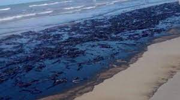

El Nombre del Parque Nacional Morrocoy fue el que más se difundió en los medios de comunicación cuando ocurrieron los derrames petroleros de julio y agosto de 2020, hubo otro sitio protegido que resultó gravemente afectado: el Refugio de Fauna Silvestre de Cuare, clasificado en Venezuela como un Área Bajo Régimen de Administración Especial (ABRAE) y hogar de cerca de 300 especies de aves que comparten su hábitat con reptiles y mamíferos en peligro de extinción. Cuare, en el estado Falcón y vecino de Morrocoy, fue el primer lugar del país en entrar en la lista de espacios protegidos por la Convención sobre los Humedales de Importancia Internacional, conocida también como la Convención de Ramsar, por la ciudad iraní en donde se firmó en 1971. Entró a la clasificación el 23 de noviembre de 1988 y desde entonces solo lo han hecho cuatro lugares más en Venezuela. Es precisamente a esta Convención a la que apelarán en 2021 los científicos, activistas y ciudadanos que desean exigir una acción por las fugas de petróleo de la empresa estatal venezolana (PDVSA). Por ser un Estado miembro del acuerdo, Venezuela está comprometida a realizar un uso racional de este espacio, pero en su lugar ha permitido que cerca de allí se levanten construcciones que han provocado que la zona comience a secarse y que, durante 2020, se haya convertido en víctima de un gran derrame de crudo.

Desde hace más de cinco años, organizaciones, turistas, ambientalistas, periodistas y activistas han denunciado la presencia de minería dentro del Parque Nacional Canaima, en el sureño estado Bolívar. En 1994 esta área natural protegida fue declarada Patrimonio Natural de la Humanidad por la Unesco y, con el tiempo, el problema de la minería ilegal se ha agravado, tanto que de los 33 sectores mineros que habían sido identificados por la organización no gubernamental SOS Orinoco en 2018, se pasó a 59 en 2020. En solo un par de años, la cantidad de puntos de extracción de oro dentro del parque creció un 78 %, Por esta razón, de acuerdo con SOS Orinoco, en el entorno ambientalista es “urgente y necesario” que Canaima sea recategorizado como “en Peligro Crítico” según los criterios de la UICN, que es el órgano técnico asesor de UNESCO. Así se activaría una alerta roja que podría impulsar una acción urgente desde el gobierno central venezolano en favor de la conservación.